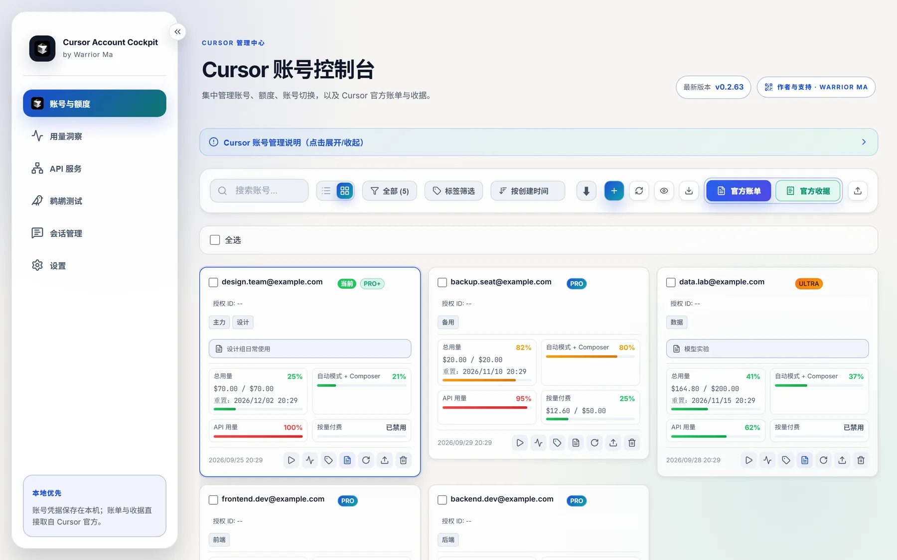
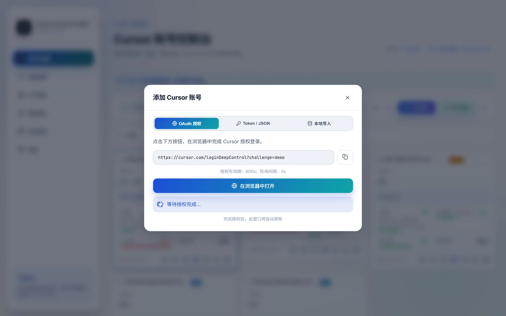
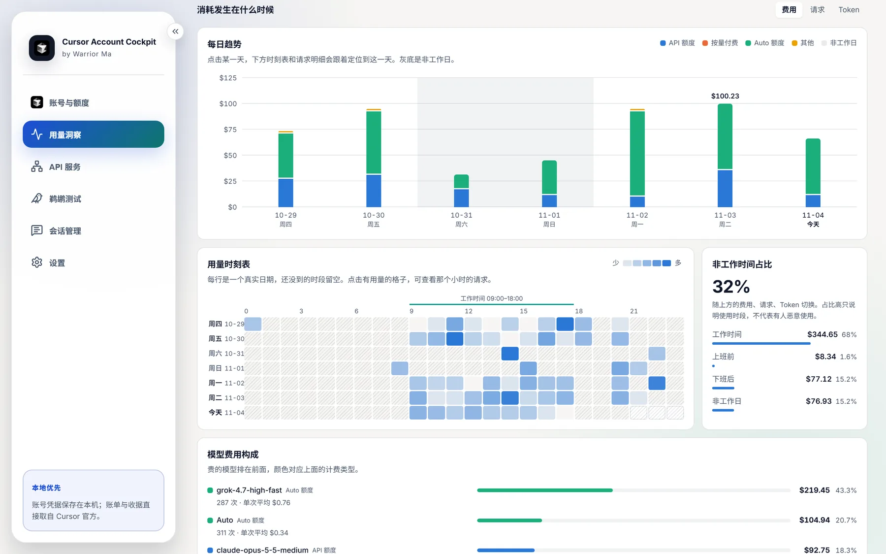
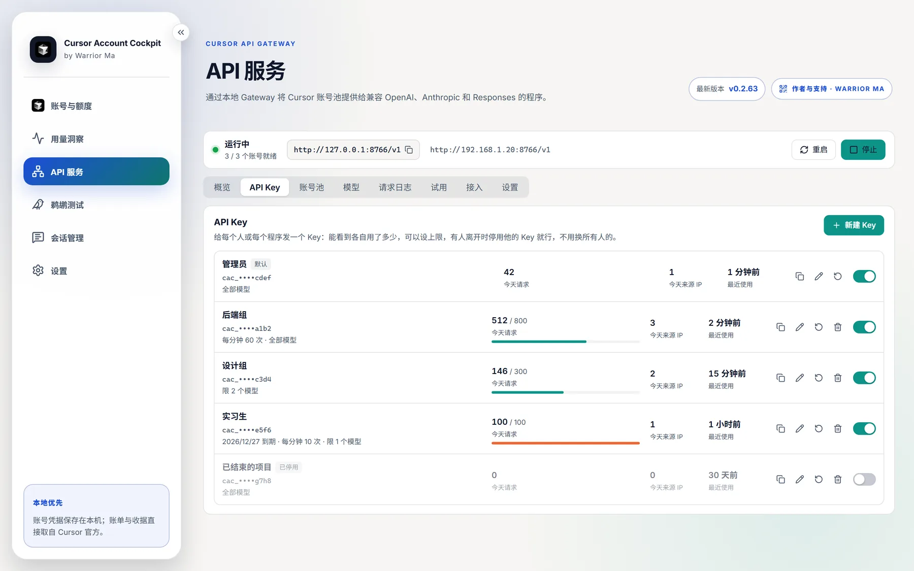
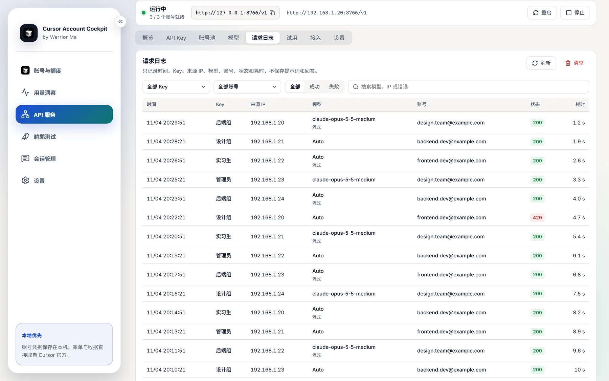
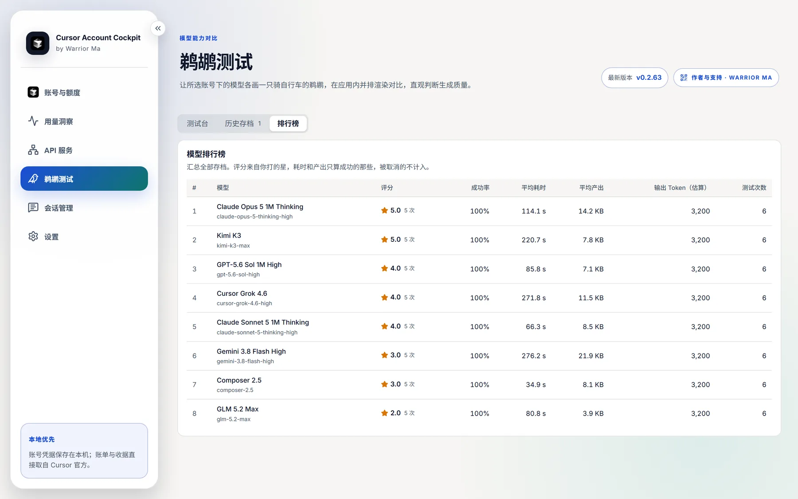
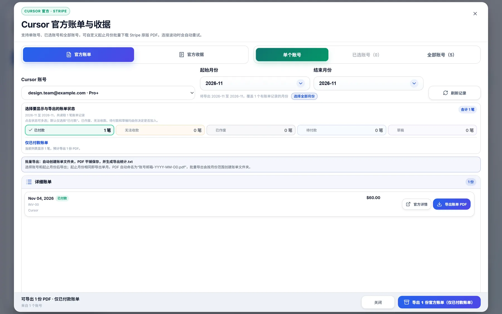
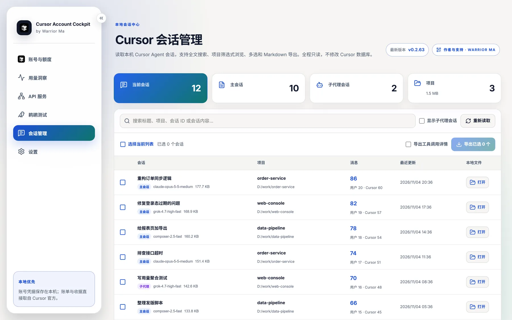
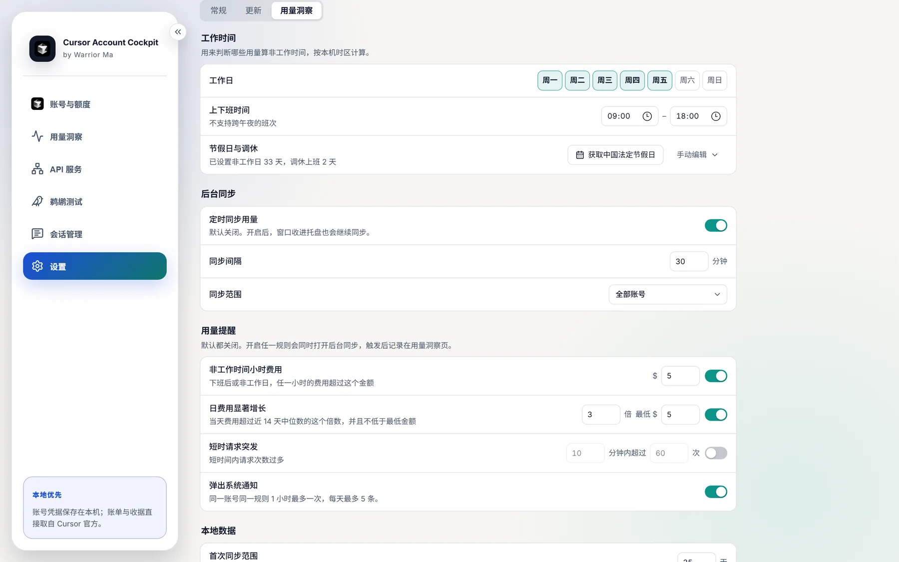

Features
How each feature works and where its limits are.
Accounts and quota
All accounts in one place. The list suits wide-screen checks and the cards suit a quick glance.
- Plan, total, Auto, API and on-demand usage, and reset time
- Import through OAuth, a token or JSON, or the local Cursor login
- One-click switching writes the login, restarts Cursor and confirms the result. Expired accounts are stopped before switching
- Cross-device backup skips expired accounts automatically


Usage insights
It answers three questions: where the money went, when, and which models cost the most.
- API quota, Auto quota, on-demand and other are counted separately and checked against official percentages
- The daily trend and time map are linked, and a click focuses the requests of a day or an hour
- Configurable working hours, holidays and make-up days, with an off-hours share
- Account comparison, model ranking, exhaustion forecast and CSV export
- Stores metadata only and never reads conversations. Background sync and notices are off by default


Team gateway
Turn the account pool into an OpenAI, Anthropic and Responses compatible API for programs or colleagues. It listens on this computer by default, and LAN access has to be turned on.
- A key per person with daily and per-minute limits, allowed models and expiry, and can be disabled at any time
- Requests and source IPs by key, account and model. Tokens are estimates, so use Usage insights for real cost
- Automatic failover, queueing when busy, and pool changes that apply immediately
- A playground and snippets for cURL, Python, Node.js, the Anthropic SDK and Claude Code
- LAN access uses unencrypted HTTP and is only suitable for trusted networks



Pelican bench
One prompt goes to many models, each returns an HTML file, and they are compared side by side in a sandbox with network access blocked.
- Mix accounts and models freely, with live progress for each cell
- Ratings, blind review, a leaderboard and in-place retries
- Reusable archives and single-file HTML export for sharing
- Each account uses an isolated worker, so a running API service is unaffected


Invoices and receipts
Filter by account, month and status, download official PDFs in bulk, and get a summary for reconciling.
- Separated by account, across months and years
- Adjustable concurrency, 5 by default

Local sessions
Browse Cursor Agent conversations on this computer read-only, without changing any Cursor data.
- Full-text search by title, project, session ID and content
- Export a selection to Markdown, with or without tool calls

Settings
General, updates and usage insights are managed separately, and rarely used options stay out of the way.
- Automatic Cursor path detection, plus window, tray and language options
- Working hours, holidays, background sync, notice rules and data retention
